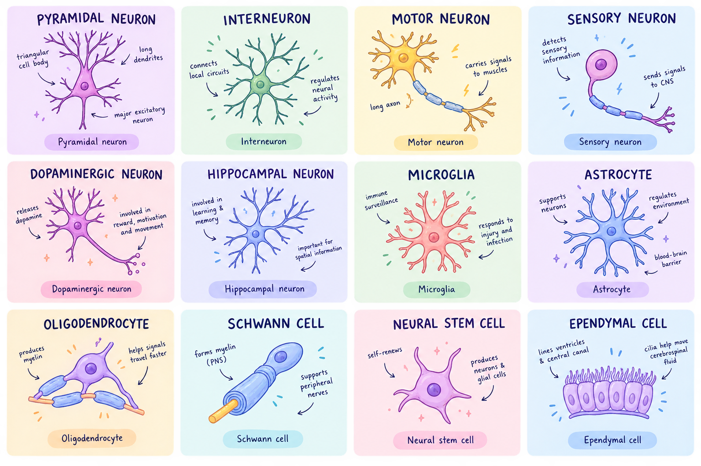

THE MANCHESTER NEUROLOGY & NEUROSURGERY SOCIETY PRESENTS
What neural cell
What neural cell
are you?
10 questions. 12 neural cells. One oddly specific answer to the question: what is your neural alter ego?
About 2 minutes · no studying required

01
Pick your answer
Go with what feels most like you. There are no right answers.
02
Meet your cell
Your choices reveal the neural cell personality that fits you best.
03
Learn the science
Because you should leave the quiz knowing something cool too.
QUESTION 1 OF 10
🧠
CALCULATINGYour neural alter ego is loading...
✨ YOUR NEURAL ALTER EGO IS...

🔬 THE SCIENCE